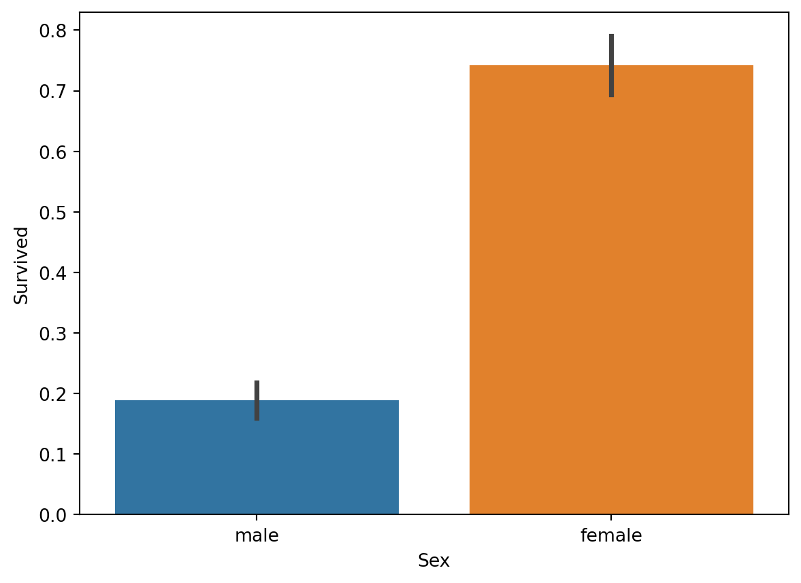
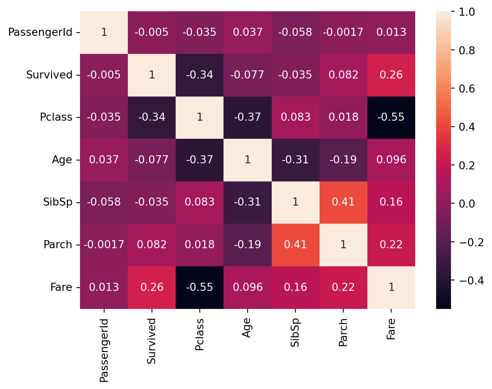
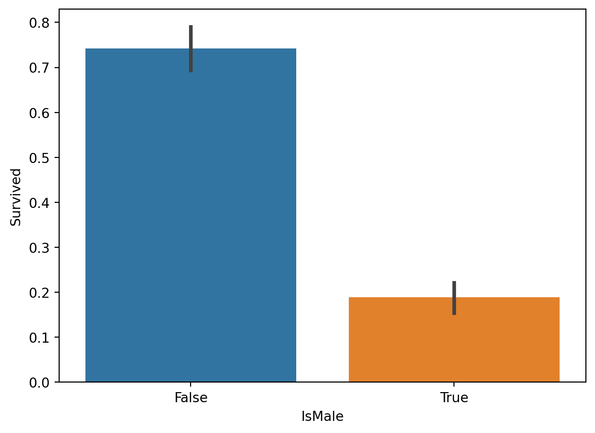
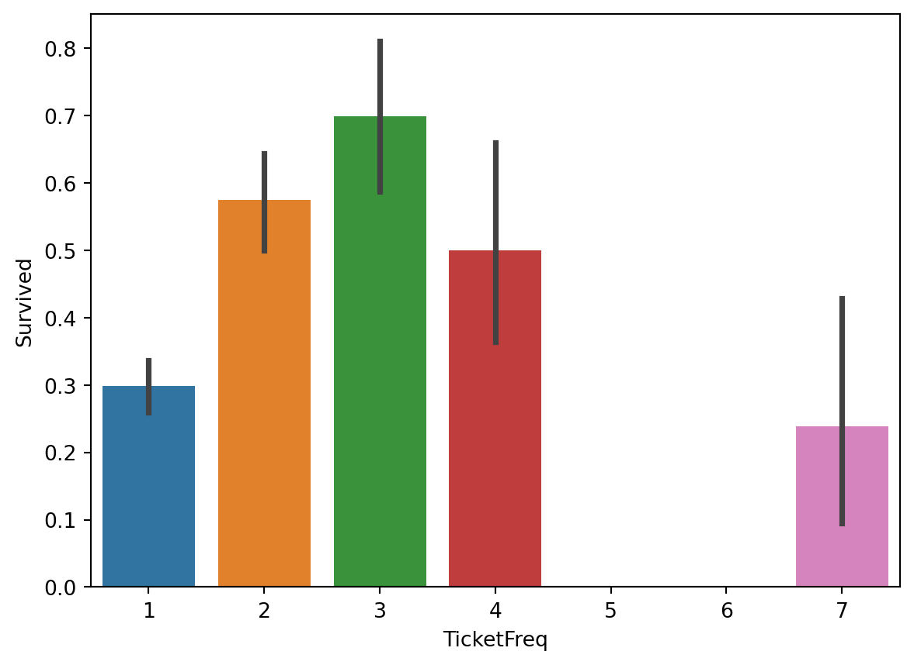
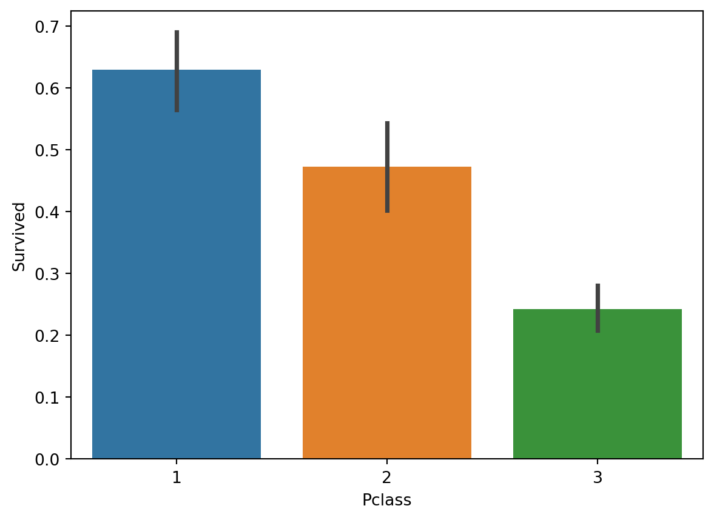
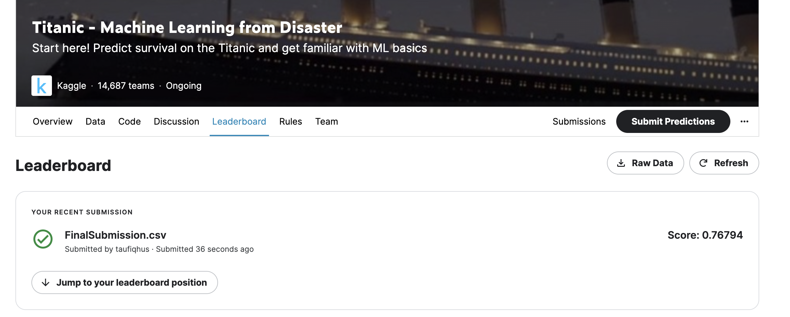

import os
import pandas as pd
import numpy as np
import seaborn as sns
import matplotlib as mpl
import matplotlib.pyplot as plt
from scipy import stats
from scipy.stats import norm, skew
from sklearn.preprocessing import LabelEncoder
from datetime import datetime
import warnings
warnings.filterwarnings('ignore')Learning Classification Algorithm using Titanic Dataset
- dataset: https://www.kaggle.com/competitions/titanic/data
- task: build a predictive model that predict whether a person survive in the titanic insident based on several factors (e.g., name, age, cabin, etc.)
We will learn some basic data exploration technique, feature engineering, and classification algorithm
Data Exploration
Lets see the preview of the dataset
df_train = pd.read_csv('data/train.csv')
df_train.head()| PassengerId | Survived | Pclass | Name | Sex | Age | SibSp | Parch | Ticket | Fare | Cabin | Embarked | |
|---|---|---|---|---|---|---|---|---|---|---|---|---|
| 0 | 1 | 0 | 3 | Braund, Mr. Owen Harris | male | 22.0 | 1 | 0 | A/5 21171 | 7.2500 | NaN | S |
| 1 | 2 | 1 | 1 | Cumings, Mrs. John Bradley (Florence Briggs Th... | female | 38.0 | 1 | 0 | PC 17599 | 71.2833 | C85 | C |
| 2 | 3 | 1 | 3 | Heikkinen, Miss. Laina | female | 26.0 | 0 | 0 | STON/O2. 3101282 | 7.9250 | NaN | S |
| 3 | 4 | 1 | 1 | Futrelle, Mrs. Jacques Heath (Lily May Peel) | female | 35.0 | 1 | 0 | 113803 | 53.1000 | C123 | S |
| 4 | 5 | 0 | 3 | Allen, Mr. William Henry | male | 35.0 | 0 | 0 | 373450 | 8.0500 | NaN | S |
df_test = pd.read_csv('data/test.csv')
df_test.head()| PassengerId | Pclass | Name | Sex | Age | SibSp | Parch | Ticket | Fare | Cabin | Embarked | |
|---|---|---|---|---|---|---|---|---|---|---|---|
| 0 | 892 | 3 | Kelly, Mr. James | male | 34.5 | 0 | 0 | 330911 | 7.8292 | NaN | Q |
| 1 | 893 | 3 | Wilkes, Mrs. James (Ellen Needs) | female | 47.0 | 1 | 0 | 363272 | 7.0000 | NaN | S |
| 2 | 894 | 2 | Myles, Mr. Thomas Francis | male | 62.0 | 0 | 0 | 240276 | 9.6875 | NaN | Q |
| 3 | 895 | 3 | Wirz, Mr. Albert | male | 27.0 | 0 | 0 | 315154 | 8.6625 | NaN | S |
| 4 | 896 | 3 | Hirvonen, Mrs. Alexander (Helga E Lindqvist) | female | 22.0 | 1 | 1 | 3101298 | 12.2875 | NaN | S |
Now let’s see some pattern on the dataset
sns.barplot(x=df_train['Sex'], y=df_train['Survived']) <Axes: xlabel='Sex', ylabel='Survived'>
Based on the plot above we can see that female are much more likely to survive compared to men
Now let’s find the correlation among the features on the data using heatmap
sns.heatmap(df_train.corr(),annot=True)
fig=plt.gcf()
plt.show()
Based on the heatmap above we can see that “PClass” and “Fare” is highly correlated to the “Survived” column, whereas other column is not highly correlated with “Survived” column.
But since “Fare” also highly correlated with “PClass” then we just need “PClass” column
Feature Engineering
Based on our data exploration above we will only use column “Sex” and “PClass” to predict the survival of each person since those two features are highly correlated with the survival
So here is the step of feature engineering that we will do:
- Convert “Sex” column into a 0/1 valued column since this column has a categorical data (“female/male”). We can call this column “IsMale”
- Create new column TicketFreq based on column Ticket. Will explain about this later
- Drop columns other unnecessary column
## Create new column "IsMale"
df_train_transformed = df_train.copy()
df_train_transformed["IsMale"] = df_train["Sex"].apply(lambda x: x == "male")
df_train_transformed.head()| PassengerId | Survived | Pclass | Name | Sex | Age | SibSp | Parch | Ticket | Fare | Cabin | Embarked | IsMale | |
|---|---|---|---|---|---|---|---|---|---|---|---|---|---|
| 0 | 1 | 0 | 3 | Braund, Mr. Owen Harris | male | 22.0 | 1 | 0 | A/5 21171 | 7.2500 | NaN | S | True |
| 1 | 2 | 1 | 1 | Cumings, Mrs. John Bradley (Florence Briggs Th... | female | 38.0 | 1 | 0 | PC 17599 | 71.2833 | C85 | C | False |
| 2 | 3 | 1 | 3 | Heikkinen, Miss. Laina | female | 26.0 | 0 | 0 | STON/O2. 3101282 | 7.9250 | NaN | S | False |
| 3 | 4 | 1 | 1 | Futrelle, Mrs. Jacques Heath (Lily May Peel) | female | 35.0 | 1 | 0 | 113803 | 53.1000 | C123 | S | False |
| 4 | 5 | 0 | 3 | Allen, Mr. William Henry | male | 35.0 | 0 | 0 | 373450 | 8.0500 | NaN | S | True |
Ticket Frequency is a ticket-based feature that includes people who have the same ticket number. This feature can serve as group size as it puts people who travel with the same ticket number together, whether they are related or not.
df_train_transformed['TicketFreq'] = df_train.groupby('Ticket')['Ticket'].transform('count')## Drop unwanted columns
df_train_transformed = df_train_transformed.drop(['PassengerId','Ticket', 'Sex', 'Name', 'Fare', 'Age', 'Parch', 'SibSp','Cabin', 'Embarked'], axis=1)
df_train_transformed.head()| Survived | Pclass | IsMale | TicketFreq | |
|---|---|---|---|---|
| 0 | 0 | 3 | True | 1 |
| 1 | 1 | 1 | False | 1 |
| 2 | 1 | 3 | False | 1 |
| 3 | 1 | 1 | False | 2 |
| 4 | 0 | 3 | True | 1 |
Since we need to do the same feature engineering process on the test dataset, so let’s wrap all the process into a single function
def transform_data(df, is_train_dataset = True):
df_transformed = df.copy()
df_transformed["IsMale"] = df["Sex"].apply(lambda x: x == "male")
df_transformed['TicketFreq'] = df_train.groupby('Ticket')['Ticket'].transform('count')
df_transformed = df_transformed.drop(['Ticket', 'Sex', 'Name', 'Fare', 'Age', 'Parch', 'SibSp','Cabin', 'Embarked'], axis=1)
if (is_train_dataset):
df_transformed = df_transformed.drop(['PassengerId'],axis=1)
return df_transformedtemp_df = transform_data(df_train)
temp_df.head()| Survived | Pclass | IsMale | TicketFreq | |
|---|---|---|---|---|
| 0 | 0 | 3 | True | 1 |
| 1 | 1 | 1 | False | 1 |
| 2 | 1 | 3 | False | 1 |
| 3 | 1 | 1 | False | 2 |
| 4 | 0 | 3 | True | 1 |
sns.barplot(x='IsMale', y='Survived', data=temp_df) <Axes: xlabel='IsMale', ylabel='Survived'>
sns.barplot(x='TicketFreq', y='Survived', data=temp_df) <Axes: xlabel='TicketFreq', ylabel='Survived'>
sns.barplot(x='Pclass', y='Survived', data=temp_df) <Axes: xlabel='Pclass', ylabel='Survived'>
Model Training
In this part we will experiment with several classifier model
To measure performance we will split the training data into train and test. So we will not touch the real test dataset to measure performance during our training process, this is to prevent data test leak. We will use 80/20 train-test split
predictors = ['IsMale', 'Pclass', 'TicketFreq']
label = 'Survived'df_train_transformed = transform_data(df_train)
X = df_train_transformed[predictors]
y = df_train_transformed[label]from sklearn.model_selection import train_test_split
X_train, X_test, y_train, y_test = train_test_split(X, y, test_size=0.33, random_state=42)from sklearn.ensemble import RandomForestClassifier
model = RandomForestClassifier()
model.fit(X_train, y_train)
predictions = model.predict(X_test)from sklearn import metrics
print('Accuracy:', metrics.accuracy_score(y_test, predictions))
print('Precision:', metrics.precision_score(y_test,predictions))
print('Recall:', metrics.recall_score(y_test, predictions))
print('F1:', metrics.f1_score(y_test, predictions))Accuracy: 0.8
Precision: 0.8080808080808081
Recall: 0.6666666666666666
F1: 0.730593607305936from sklearn.tree import DecisionTreeClassifier
dt = DecisionTreeClassifier()
dt.fit(X_train, y_train)
predictions = dt.predict(X_test)print('Accuracy:', metrics.accuracy_score(y_test, predictions))
print('Precision:', metrics.precision_score(y_test,predictions))
print('Recall:', metrics.recall_score(y_test, predictions))
print('F1:', metrics.f1_score(y_test, predictions))Accuracy: 0.8
Precision: 0.8080808080808081
Recall: 0.6666666666666666
F1: 0.730593607305936Based on the comparison above, random forest classifier model gives better accuracy, that is why we will choose this model for our final prediction
df_test_transformed = transform_data(df_test)
X_test_submission = df_test_transformed[predictors]model = RandomForestClassifier()
model.fit(X, y)
predictions = model.predict(X_test_submission)output= pd.DataFrame (pd.DataFrame({
"PassengerId": df_test["PassengerId"],
"Survived": predictions}))
output.head()| PassengerId | Survived | |
|---|---|---|
| 0 | 892 | 0 |
| 1 | 893 | 1 |
| 2 | 894 | 0 |
| 3 | 895 | 0 |
| 4 | 896 | 1 |
output.to_csv('FinalSubmission.csv', index=False)Here is the result when we submit this to kaggle competition 